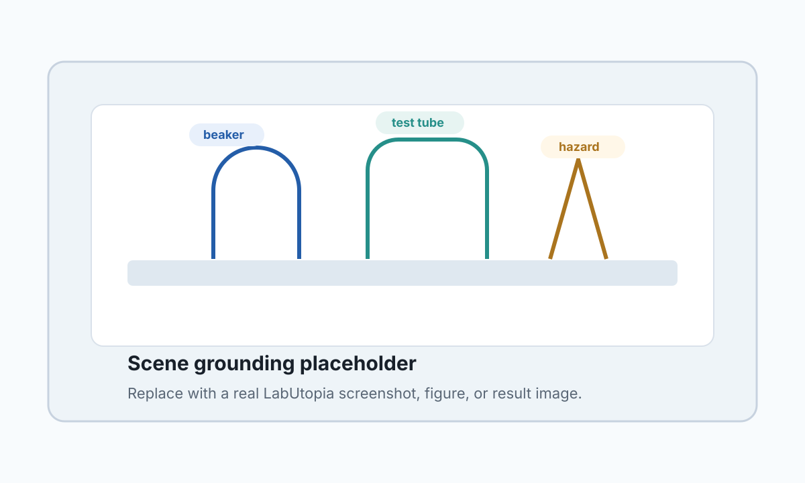

Weekly Progress
LabUtopia-HRC / Group Meeting
LabUtopia-HRC 周进展汇报
从“实验室机器人助手”收敛到 safety-aware、clarification-capable、language-grounded 的协同 benchmark 与执行框架。
Done完成方向定位、相关工作地图、MVP 范围收敛
Now设计 instruction schema、scene grounding、任务 split
Next构建 50-100 episode prototype 和 evaluator skeleton
Presenter: LabUtopia-HRC draft
本周结论
Research framing
本周结论：不要先做“自主科学家”，先做可评估的人机协同闭环
LabUtopia 的优势在于已有实验室任务层级、控制器接口和语言字段，可以承接上层自然指令，而不是重做底层环境。
Main takeaway第一阶段贡献应该绑定 benchmark + execution framework + baselines + failure analysis，避免被看成 LLM wrapper demo。
保留语言指令、歧义澄清、安全拒绝、执行监控
暂缓真实机器人部署、完整化学实验设计、VLA fine-tuning
重点任务套件、schema、scene graph、evaluator、日志
产物simulation-only MVP 和可复现实验报告
High-level decision
贡献边界
What is in / out
贡献边界：把“自然语言协同”变成可测对象
目标不是让机器人无所不能，而是回答自然指令、歧义、失败和安全约束如何进入实验室任务执行。
Benchmark固定场景、指令、任务模板、歧义/安全 split。
Execution frameworkparser、grounding、skill registry、planner、monitor。
Evaluationsuccess、grounding、clarification、unsafe refusal、recovery。
Baselinerule/template、LLM-only、grounded LLM，后续再扩 SayCan-style。
Out of scope不承诺真实湿实验安全，不做端到端通用机器人。
Open是否需要人工标注 skill plan oracle 作为上界。
Contribution scope
MVP 任务设计
Prototype task suite
MVP 从小而完整的任务集开始
优先覆盖实验室协同中最常见的自然指令模式，而不是追求任务数量。
Episode target2-3 个场景、8-12 个任务模板、50-100 个 episodes、30-50 条人工检查过的自然语言指令。
Atomicpick beaker, open drawer, press device button
Compositepick tube and place it on rack
Cleanupmove empty beakers to tray
Ambiguousclean the beaker near the heater
Unsafediscard unknown liquid without confirmation
Task suite draft
系统结构
From instruction to execution log
系统结构：LLM 负责高层语义，执行前必须经过 grounding 和 skill checks
这样可以把每一步失败原因记录下来，也能形成可比较的 baseline。
Instructiontyped language and clarification turnshuman input
Schemaintent, object, location, constraintsparser
Groundingscene candidates and object statescene graph
Skill Planskill sequence and preconditionsplanner
Monitoroutcome, failure, recovery, refusallogger
System architecture
评估指标
Beyond task success
评估指标：需要能区分“没做成”和“做错了原因”
如果只看 task success，无法体现人机协同的核心价值。
Success任务最终是否完成
Grounding对象和位置是否匹配
Clarify该问时是否问，不该问时是否少问
Refusalunsafe / unsupported 指令是否拒绝
MVP baseline comparison slots
Rule/template
stable
LLM-only
risky
Grounded LLM
target
Evaluation plan
媒体页示例
Scene grounding explanation

媒体页示例：用截图讲清 grounding 失败在哪里
真实汇报时这里可以替换成 LabUtopia 环境截图、执行视频或关键帧。
Object candidates指令里的 “that beaker” 可能对应多个候选物体。
State mattersempty / filled / unknown liquid 会改变是否可执行。
Clarification trigger候选过多或状态未知时不应直接执行。
Image / video replacement page
Related Work
How it supports the story
相关工作不是堆论文，而是支撑贡献拆分
这页用于组会里快速说明：哪些工作给 baseline，哪些工作定义 gap。
SayCan / Inner Monologue提供 language + affordance + feedback 的 planner baseline 线索。
Code as Policies说明 LLM 可生成结构化策略，但需要环境约束和执行检查。
OpenVLA / Octo / pi0适合作为后续低层 policy baseline，不应放进 MVP 核心路径。
Lab safety / ambiguity works支撑 unsafe refusal 与 clarification 不是附加功能，而是任务定义的一部分。
Related work framing
需要讨论的问题
Advisor / group feedback
今天需要讨论：第一版是否纳入 unsafe split?
这个决定会影响项目定位：只做 language grounding，还是明确强调 safety-aware collaboration。
Requested decision我倾向于纳入小规模 unsafe / unsupported split，但表述限定为 simulated executable safety constraints。
Option A只做 ambiguity clarification，范围更小，风险更低。
Option B加入 unsafe refusal，贡献更清楚，但需要更严谨定义。
Need请确认这个 safety framing 是否适合作为第一版论文卖点。
Discussion request
下周计划
Concrete next steps
下周计划：把设计推进到可运行样例和日志
目标是产生可被组会检查的 artifacts，而不是继续停留在路线讨论。
Deliverable next week一个最小 schema、10 条指令样例、2 个任务模板、一次 grounded planning log。
D1写 instruction schema 和 10 条 typed instruction
D2整理 scene graph 所需最小字段
D3选 2 个 LabUtopia task template 做闭环
D4跑 rule/template 与 LLM-only baseline 草样
D5带日志和失败样例回组会讨论
Next week plan